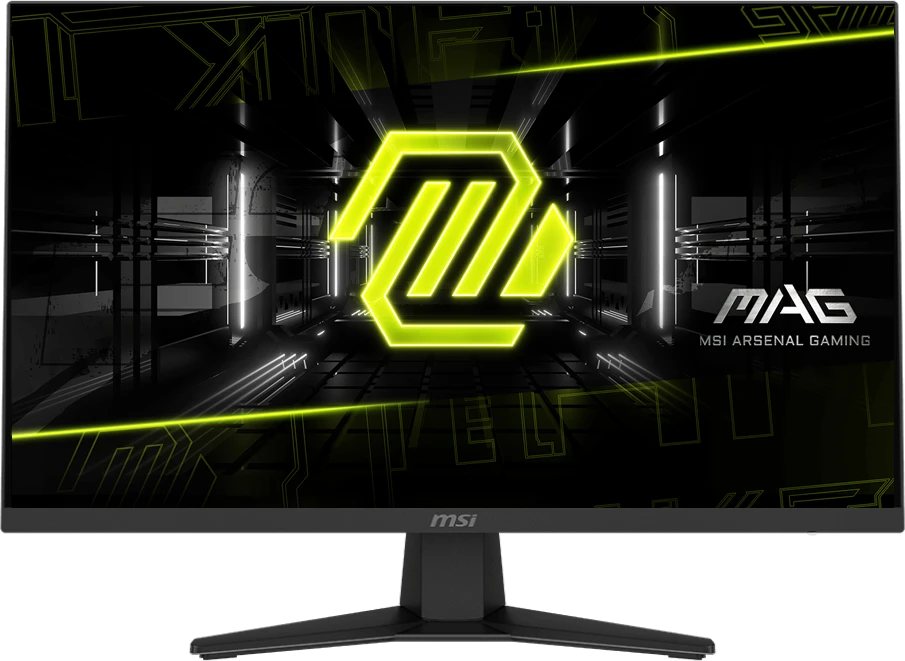
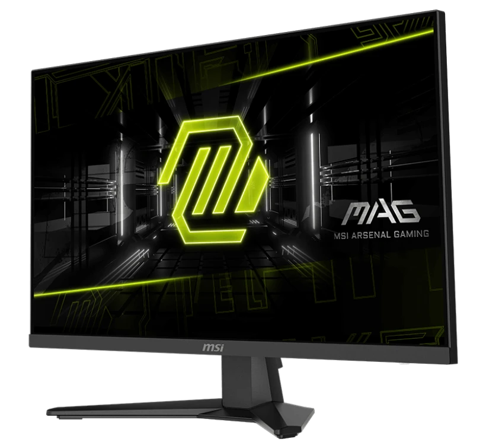
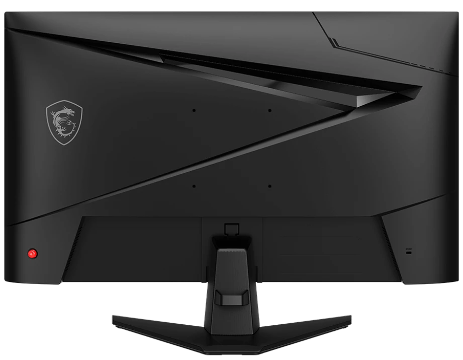

Доставка
Способы, стоимость и сроки уточняются для вашего заказа. Здесь они не зафиксированы.

MSI MAG 274QF X24 / вид спереди
MSI / Монитор
27-дюймовый WQHD экран для игрового сценария с высокой частотой обновления.
22 050 ₽
Цена — пример · наличие уточняется
В корзинуОткроется демонстрационная корзина с монитором.
Сценарий выбора
2560 × 1440 и частота до 240 Гц — два ориентира для игрового экрана.
Для максимальной заявленной частоты используйте DisplayPort. Через HDMI производитель указывает до 144 Гц в WQHD. Итоговая частота кадров зависит от игры и системы — частота монитора её не гарантирует.
До выбора проверьте выходы компьютера, режим подключения и место под 27-дюймовый экран.



Перед заказом
Доступные способы и окончательные условия будут показаны при оформлении.
Способы, стоимость и сроки уточняются для вашего заказа. Здесь они не зафиксированы.
Доступные методы зависят от условий заказа. Прототип не ограничивает их по типу покупателя.
Гарантийные условия и порядок обращения следует уточнить перед покупкой.
Контакты →Связь по сценарию / PLAY
Общий ориентир — игра в 1440p. Это связь по сценарию; режим подключения и возможности выбранной системы проверяются отдельно.
Место для проекта и инструментов →
WORK / ежедневные задачиДокументы, окна и видеосвязь →
Изображения этой модели сохранены из её карточки King-Komp.